끝낼 시각까지만 일해요
정한 작업만 처리하거나, 끝난 뒤에도 개선할 곳을 찾게 해요. 정한 시각이나 한도가 리셋될 때 시작하게 예약하고, 한도에 걸리면 기다렸다 이어가요.
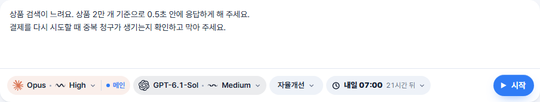
할 일과 종료 시각만 정하세요. Claude Code와 Codex가 고치고 검증하고, 돌아왔을 때 볼 커밋을 남겨요. 새로 만들 것도 기획부터 보안검토까지 맡길 수 있어요.
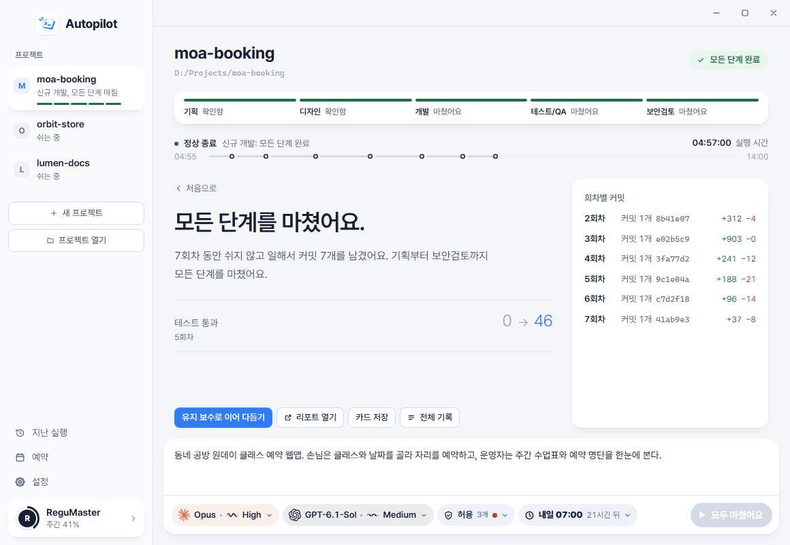
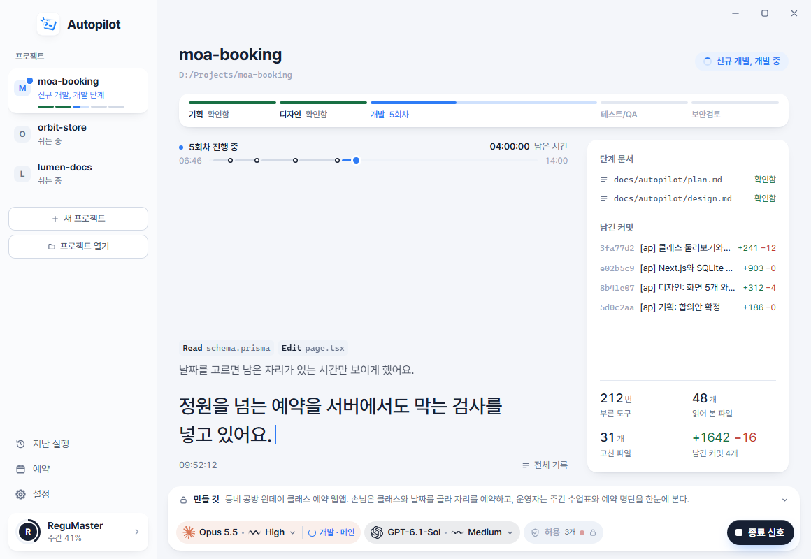
AutoPilot은 작업 선택, 코드 수정, 검증, 커밋, 기록, 다음 작업을 반복해요.
Git 프로젝트 폴더를 열고 할 일을 적어요. 모델, 작업 방식, 종료 시각도 같은 자리에서 고르고, 프로젝트는 왼쪽에 여러 개 열어 따로 돌려요.
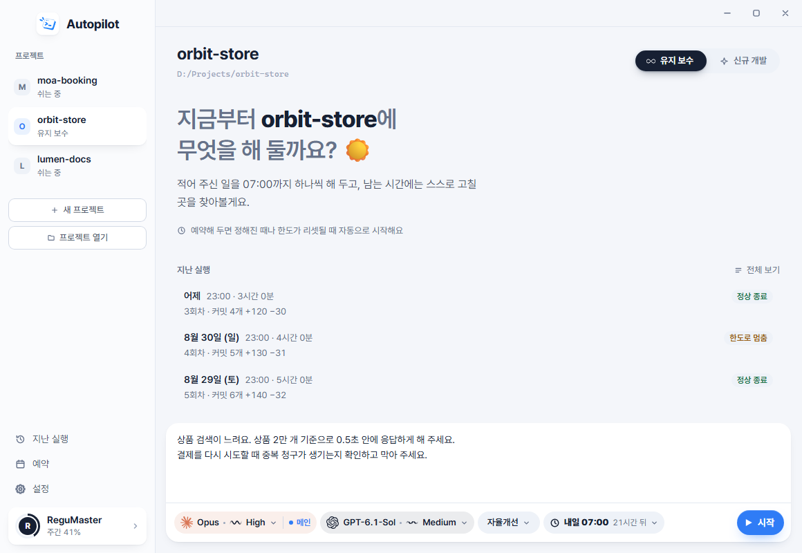
Claude Code나 Codex가 수정하고 테스트를 돌려요. 지금 무엇을 하는지는 짧은 문장으로, 검증으로 확인한 변화는 숫자로 보여줘요.
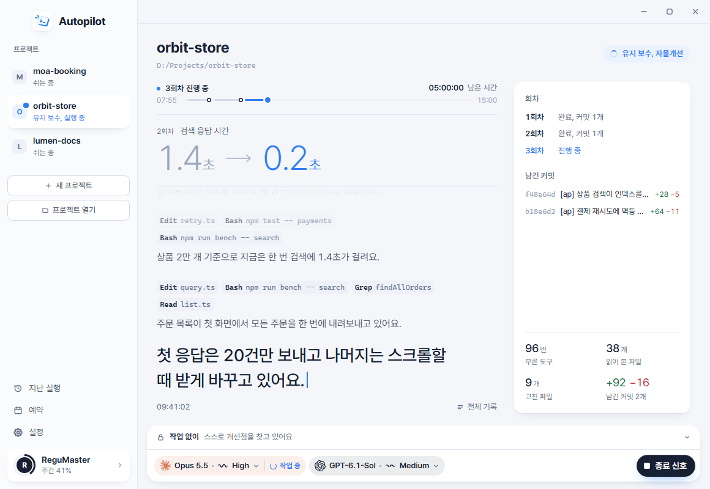
회차마다 커밋이 남고 리포트가 쌓여요. 바뀐 점을 살펴보고 반영할지 직접 정해요. 마친 화면은 카드 이미지로 저장해 공유할 수도 있어요.
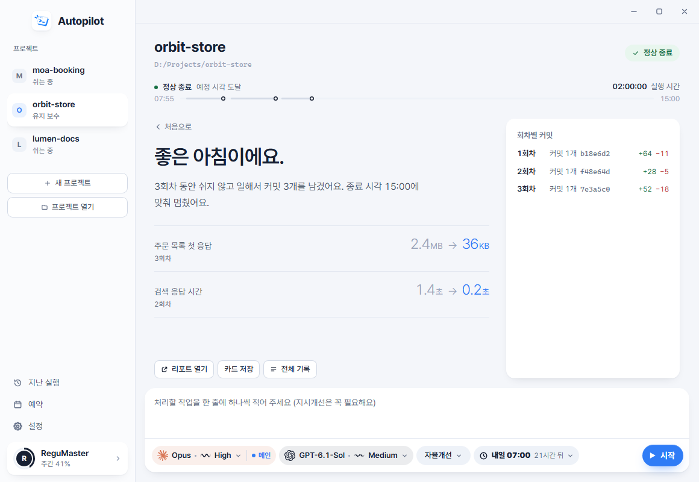
새 프로젝트는 기획, 디자인, 개발, 테스트/QA, 보안검토를 차례로 밟아요. 단계마다 일할 AI를 Claude나 Codex로 고르고, 확인이 필요한 단계에서는 멈춰서 기다려요.
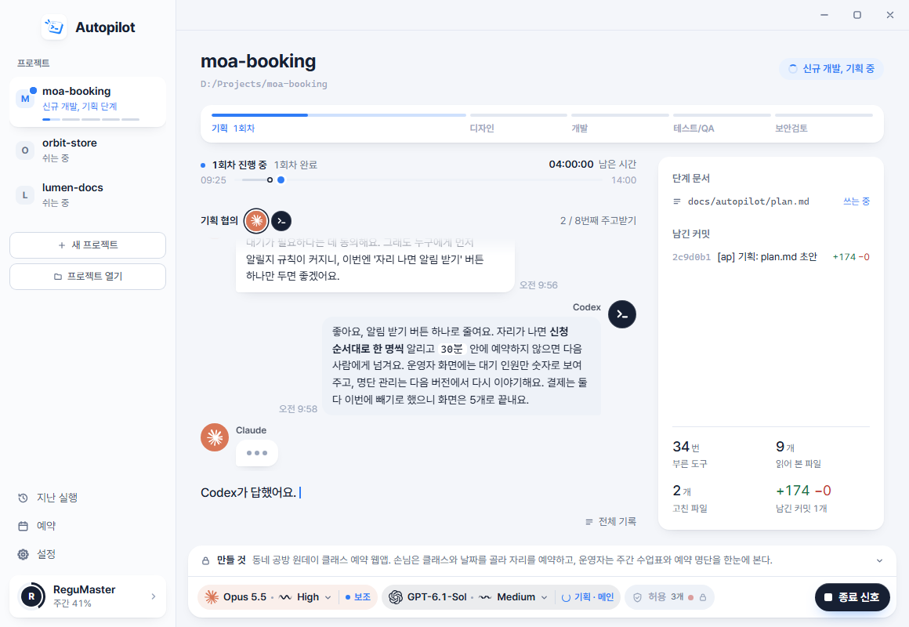
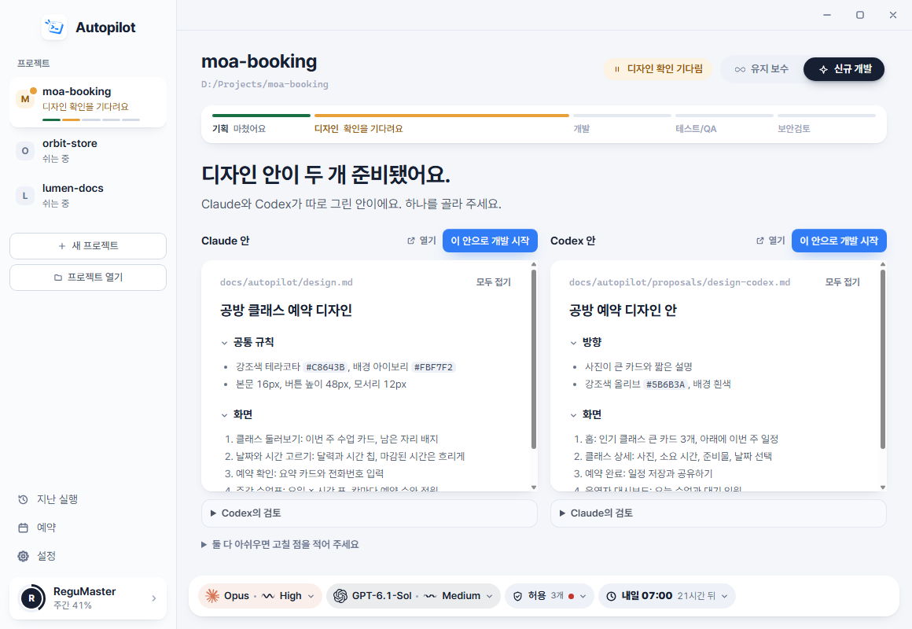
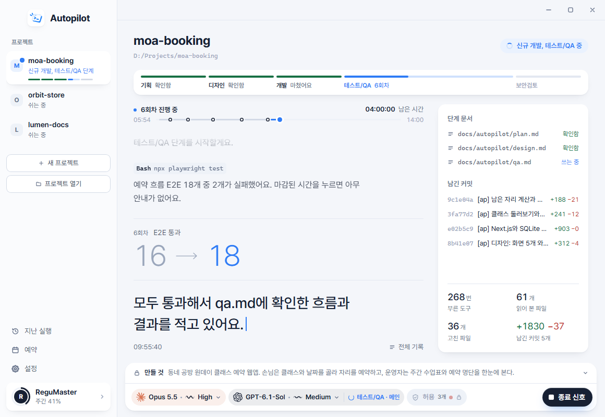
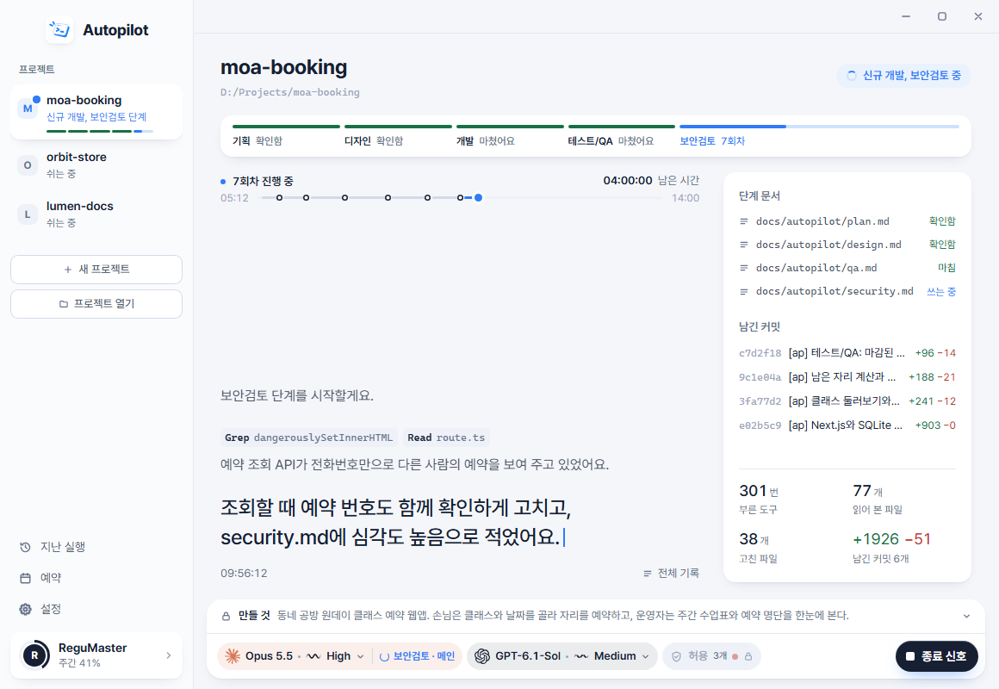
검증으로 확인한 변화만 성과로 적어요. 위 수치는 예시 프로젝트의 실행 결과예요. 연속으로 돌린 날수는 시작 화면 인사에서 알려줘요.
정한 작업만 처리하거나, 끝난 뒤에도 개선할 곳을 찾게 해요. 정한 시각이나 한도가 리셋될 때 시작하게 예약하고, 한도에 걸리면 기다렸다 이어가요.

내 작업 브랜치는 건드리지 않고, 검증을 통과한 변경만 커밋해요.
ai/autopilot
[ap] 결제 재시도 시 멱등 키를 붙여 중복 청구 방지
클라우드에 올리지 않고 내 폴더에서 바로 실행해요. 모델과 설정은 프로젝트마다 따로 둘 수 있어요.
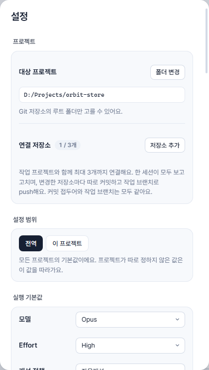
읽은 파일, 고친 파일, 돌린 명령이 회차별로 남아요. 나중에 이유를 되짚어 볼 수 있어요.
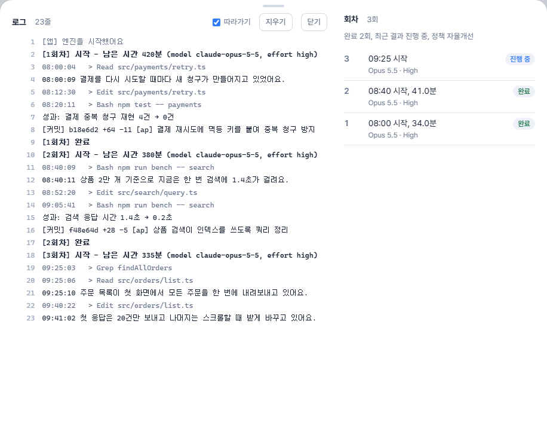
일할 AI를 고르고 Codex의 모델과 추론 단계도 입력창에서 바꿔요. 실행 중에 바꾸면 다음 회차부터 적용돼요.
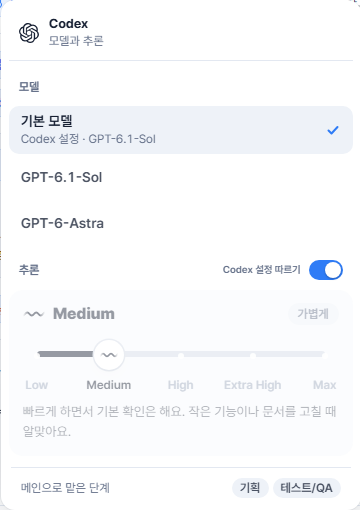
만들고 싶은 것을 적으면 Claude가 초안을 채워요. 칩으로 다듬고 만들면 폴더, Git 저장소, 첫 커밋까지 준비돼요.
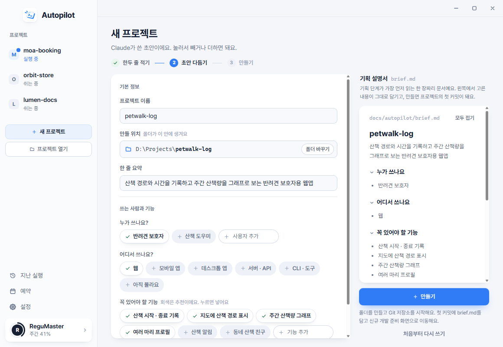
Windows·macOS·Linux 데스크톱, Git, Claude Code 사용 권한이 필요해요. 이미 있는 프로젝트에는 커밋이 하나 이상 있어야 하고, 새 프로젝트는 앱이 폴더와 저장소를 만들어 줘요.
아니요. 기본은 Claude Code만 써요. Codex CLI를 설치하고 로그인해 두면 회차를 돌릴 AI나 단계별 메인·보조로 고를 수 있어요. 보조가 Codex면 프로젝트 내용이 OpenAI로 가기 때문에, 외부 서비스로 보내기를 허용했을 때만 동작해요.
기획과 디자인을 마치면 멈추고 산출물을 보여 줘요. 확인하면 다음 단계로 넘어가고, 고칠 점을 적으면 그 단계를 다시 해요. 테스트/QA나 보안검토에서 고치지 못한 문제가 남으면 정한 횟수만큼 개발로 되돌려요.
네. 클라우드에서 도는 서비스가 아니라 내 PC에서 실행돼요. 앱 창을 닫아도 시스템 트레이에서 계속 동작하고, 끝난 뒤에는 PC를 절전하거나 종료하게 설정할 수 있어요.
아니요. ai/autopilot 브랜치에 커밋으로 남고, 직접 검토한 뒤에 병합해요.
Claude Code 명령을 매번 승인받지 않고 실행해요. 중요한 데이터는 백업하고, 신뢰하는 프로젝트에서 써 주세요. 삭제할 파일은 .autopilot/recycle_bin으로 옮겨 두어서 되돌릴 수 있어요.
Windows(설치형·포터블), macOS(Apple Silicon·Intel), Linux(AppImage·deb)를 지원해요. macOS는 서명하지 않은 앱이라 처음 한 번 우클릭으로 열어야 해요. 사용량 표시와 한도 리셋 예약은 키체인의 로그인 정보로 쓸 수 있어요.